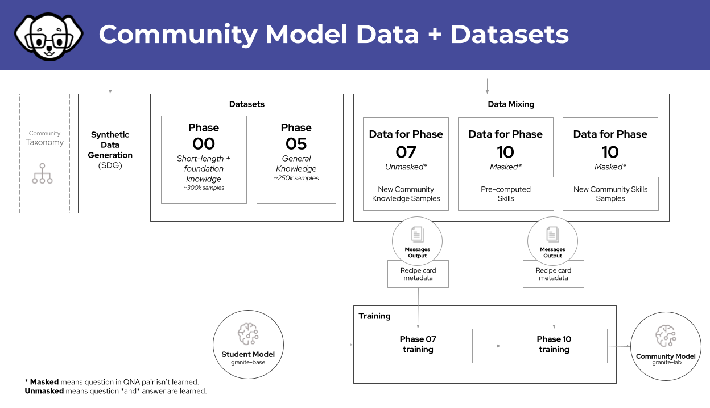

Community Model Build Process
Note
This document is the Community Build Process, these are the general steps to get the cmb built.
Community Model Build diagram¶

Add the PRs to the local tree¶
Add the PRs you want to be built into the run. Tag the PRs with "cmb-running."
mkdir -p compositional_skills/general/synonyms
vi compositional_skills/general/synonyms/attribution.txt
vi compositional_skills/general/synonyms/qna.yaml
Verify changes¶
ilab taxonomy diff
Warning
~/.local/share/instructlab/datasets -- should be empty before starting
Every gpu should be "empty", or 0% check with nvidia-smi
Create the data¶
ilab data generate
Run the training after the generate is complete¶
ilab model train --strategy lab-multiphase --phased-phase1-data ~/.local/share/instructlab/datasets/knowledge_train_msgs_XXXXXXX.jsonl --phased-phase2-data ~/.local/share/instructlab/datasets/skills_train_msgs_XXXXXXX.jsonl
Post training evaluation steps¶
If you want to send a sanity check, you can set these two variables to do a subset of the training:
export INSTRUCTLAB_EVAL_FIRST_N_QUESTIONS=10 # mtbench
export INSTRUCTLAB_EVAL_MMLU_MIN_TASKS=true # mmlu
(optional in case of sanity of a specific Sample Model creation)
ilab model evaluate --benchmark mt_bench --model ~/.local/share/instructlab/checkpoints/hf_format/samples_XXXXXX
Tip
We should do the revaluation because we want to reverify the numbers before going any farther.
General Benchmarking¶
mmlu: general model knowledge, general facts, it's a knowledge number out of 100mt_bench: is a skill based, extraction, etc, out of 10
Note
we want around 7.1 for mt_bench average for a model candidate
Specific Benchmarking¶
mmlu_branch: these are specific to the general knowledge
ilab model evaluate --benchmark mmlu_branch --model ~/.local/share/checkpoints/hf_format/<checkpoint> --tasks-dir ~/.local/share/instructlab/datasets/<node-dataset> --base-model ~/.cache/instructlab/models/granite-7b-redhat-lab
mt_bench_branch: these are specific for the skills
ilab model evaluate --benchmark mt_bench_branch --model ~/.local/share/checkpoints/hf_format/<checkpoint> --taxonomy-path ~/.local/share/instructlab/taxonomy --judge-model ~/.cache/instructlab/models/prometheus-8x7b-v2-0 --base-model ~/.cache/instructlab/models/granite-7b-redhat-lab --base-branch main --branch main
Hosting the release candidates¶
rsync over the files
mkdir $(date +%F)
cd $(date +%F)
rsync --info=progress2 -avz -e <USERNAME>@<REMOTE>:~/.local/share/checkpoints/hf_format/samples_xxxxx ./
Set up (if needed)
python3.11 -m venv venv
source venv/bin/activate
pip install vllm
./run.sh
run.sh
#!/bin/bash
DIRECTORY=$1
DATE=$(date +%F)
RANDOM_STRING=$(tr -dc A-Za-z0-9 </dev/urandom | head -c 10; echo)
RANDOM_PORT=$(shuf -i 8001-8800 -n 1)
API_KEY=$RANDOM_STRING-$DATE
echo "$DIRECTORY,$API_KEY,$RANDOM_PORT" >> model_hosting.csv
echo "ilab model chat --endpoint-url http://cmb-staging.DOMAIN.xx:$RANDOM_PORT/v1 --api-key $API_KEY --model $DIRECTORY" >> model_ilab_scripting.sh
python -m vllm.entrypoints.openai.api_server --model $DIRECTORY --api-key $API_KEY --host 0.0.0.0 --port $RANDOM_PORT --tensor-parallel-size 2
Find the ilab random command to host the model, send that on after the PR letter
cat model_ilab_scripting.sh
Form letter for PRs¶
Hi! 👋
Thank you for submitting this PR. We are ready to do some validation now, and we have a few candidates to see if they improve the model.
We some resources to run these release candidates, but we need you to help us. Can you reach out to me either on Slack (@awesome) or email me at awesomeATinstructlab.ai so I can get you access via ilab model chat?
We can only run these models for a "week" or so, so please reach out as soon as possible and tell me which one is best for you on this PR.
With confirmed success¶
With confirmed success, tag the PR with "ready-for-merge" and remove the "community-build-ready" tags. Wait till the "week" before shutting down the staging instance, and merge in all the ones that have been tagged.
Steps to Merge and Release¶
After you have merged in the PRs to the taxonomy, now you need to push this to huggingface, if you don't have access to HuggingFace, you will need to find someone to add you to it ;).
1) Clone down the repository on the staging box if you haven't already
git clone https://huggingface.co/instructlab/granite-7b-lab
cd granite-7b-lab
vi .git/config
# url = git@hf.co:instructlab/granite-7b-lab
# verify you can authenticate with hf.com: ssh -T git@hf.co
samples_xxxx into the granite-7b-lab
3) git add . && git commit
4) Write up a good commit message
5) tag and push
git tag cmb-run-XXXXX
git push origin main
git push origin cmb-run-XXXXX
Convert to gguf¶
git clone https://github.com/ggerganov/llama.cpp.git
cd llama.cpp/
pip install -r requirements.txt
make -j8
./convert_hf_to_gguf.py ../granite-7b-lab --outfile granite-7b-fp16.gguf
./llama-quantize granite-7b-fp16.gguf granite-7b-_Q4_K_M.gguf Q4_K_M/
./llama-cli -m granite-7b-_Q4_K_M.gguf -p "who is batman?" -n 128